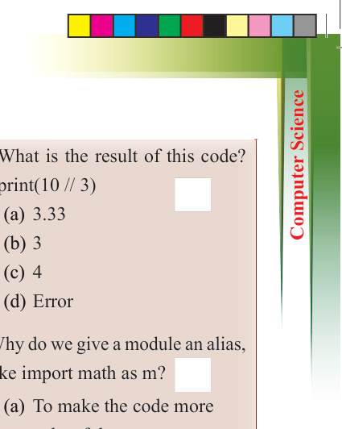
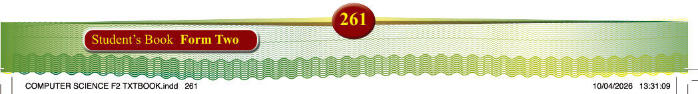
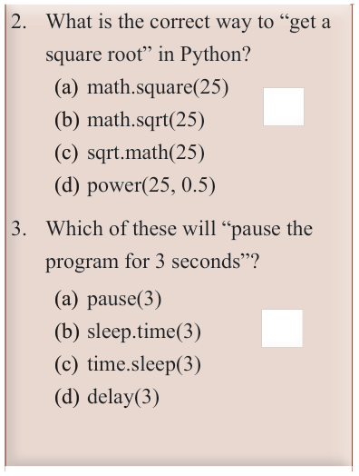
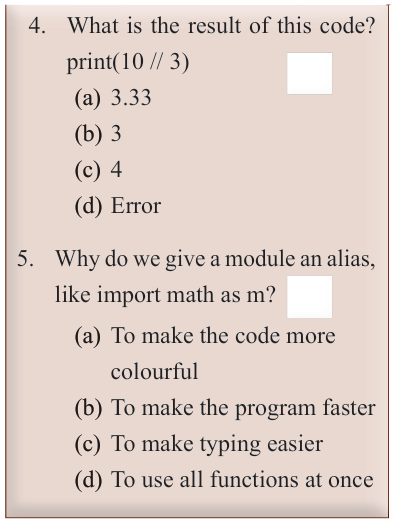

261
Student’s Book Form Two

2. What is the correct way to “get a square root” in Python?
(a) math.square(25)
(b) math.sqrt(25)
(c) sqrt.math(25)
(d) power(25, 0.5)
3. Which of these will “pause the program for 3 seconds”?
(a) pause(3)
(b) sleep.time(3)
(c) time.sleep(3)
(d) delay(3)

4. What is the result of this code? print(10 // 3)
(a) 3.33
(b) 3
(c) 4
(d) Error
5. Why do we give a module an alias, like import math as m?
(a) To make the code more colourful
(b) To make the program faster
(c) To make typing easier
(d) To use all functions at once

Project Development of a student recording system using python
Aim: To create a basic student recording system in Python that can store and
manage student details, such as names, IDs, grades, and courses.
Project requirements:
1. The program should prompt the user to enter a student’s name, ID, and course details.
2. The user should input the student’s grade for each course.
3. The program should display the student’s information, including the name,
ID, courses, and grades.
4. The program should calculate the average grade for each student and display it.
5. The program should handle invalid inputs and display appropriate error messages if the data is incorrect or missing.